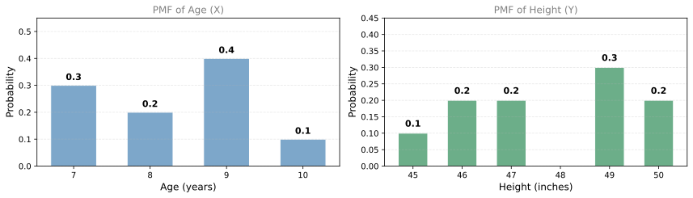
Joint Distributions
probability
Previously you learned about probability distributions for a single variable (for example, the height of a population). But what if you want to look at…
Previously you learned about probability distributions for a single variable (for example, the height of a population). But what if you want to look at two variables together? For example, both the height and the age of children in a classroom. How do these two features combine? For that, you need a joint distribution.
Joint Distribution (Discrete)
Starting with Individual Distributions
Consider a simple dataset of 10 children, ages 7 through 10. First, count how many children there are at each age:
| Age | Count | Probability |
|---|---|---|
| 7 | 3 | 0.3 |
| 8 | 2 | 0.2 |
| 9 | 4 | 0.4 |
| 10 | 1 | 0.1 |
Dividing each count by the total (10) gives the probability mass function for age. For example, the probability that a randomly chosen child is 9 years old is 0.4.
Now for the same 10 children, record their heights (in inches, rounded to the nearest inch):
| Height (inches) | Count | Probability |
|---|---|---|
| 45 | 1 | 0.1 |
| 46 | 2 | 0.2 |
| 47 | 2 | 0.2 |
| 48 | 0 | 0.0 |
| 49 | 3 | 0.3 |
| 50 | 2 | 0.2 |
Each individual distribution tells you about one variable in isolation. But what if you want to know the probability that a child is both a certain age and a certain height?
Joint Probability
The joint probability of two discrete variables \(X\) and \(Y\) is the probability that \(X\) takes a specific value and \(Y\) takes a specific value simultaneously:
\[ P(X = x, \; Y = y) \]
For example: what is the probability that a child is 9 years old and 49 inches tall?
From the data, 4 children are age 9, and 3 of those 4 are 49 inches tall. So:
\[ P(X = 9, \; Y = 49) = \frac{3}{10} = 0.3 \]
Joint Probability Table
To organize all joint probabilities, build a joint counts table (how many children have each combination of age and height), then divide every entry by the total:
Joint counts:
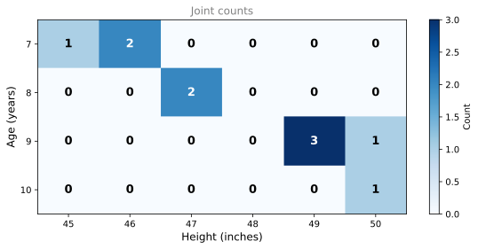
Joint PMF (divide each entry by 10):
All possible combinations of \(x\) and \(y\) along with their probabilities form the joint distribution. Since both age and height are discrete variables, this is a discrete joint distribution.
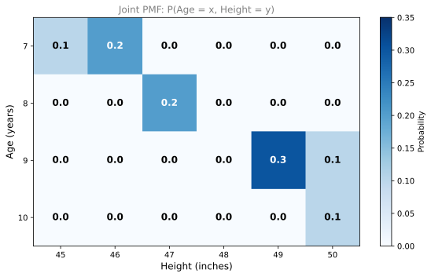
Reading the Joint PMF
From the joint probability table, you can answer questions like:
- \(P(X=8, Y=48) = 0\). There are zero children who are 8 years old and 48 inches tall.
- \(P(X=7, Y=46) = 0.2\). Two out of ten children are age 7 and 46 inches tall.
- \(P(X=9, Y=49) = 0.3\). Three out of ten children are age 9 and 49 inches tall.
Notice that all entries in the table sum to 1 (every child appears in exactly one cell):
\[ \sum_{x} \sum_{y} P(X=x, Y=y) = 1 \]
This is the requirement for any valid joint probability distribution.
Review Questions
1. What does a joint probability \(P(X=x, Y=y)\) represent?
TipAnswer
It represents the probability that variable \(X\) takes the value \(x\) and variable \(Y\) takes the value \(y\) simultaneously. It captures how two variables behave together, not just individually.
1. In the children dataset, what is \(P(\text{Age}=10, \text{Height}=50)\)?
TipAnswer
\(P(X=10, Y=50) = \frac{1}{10} = 0.1\). There is one child who is both 10 years old and 50 inches tall.
1. Why must all entries in a joint PMF table sum to 1?
TipAnswer
Because every observation in the dataset falls into exactly one combination of \((x, y)\). The table covers all possible outcomes, and probabilities over all outcomes must sum to 1 (certainty).
1. From the joint PMF, can you determine the probability that a child is 9 years old (regardless of height)?
TipAnswer
Yes. Sum all entries in the Age=9 row: \(0 + 0 + 0 + 0 + 0.3 + 0.1 = 0.4\). This gives the marginal probability \(P(X=9) = 0.4\), which matches the individual age distribution. Summing across one variable to recover the other variable’s distribution is called marginalization.
Joint Distribution of Independent Variables
Two Fair Dice (Independent)
Throw two fair six-sided dice. Let \(X\) be the number on the first die and \(Y\) be the number on the second die. Each has the same PMF: every value from 1 to 6 has probability \(\frac{1}{6}\).
Since the two dice do not affect each other, \(X\) and \(Y\) are independent. For independent variables, the joint probability is simply the product of the individual probabilities:
\[ P(X=x, Y=y) = P(X=x) \cdot P(Y=y) \]
For example:
\[ P(X=2, Y=5) = \frac{1}{6} \cdot \frac{1}{6} = \frac{1}{36} \]
Since every combination has probability \(\frac{1}{6} \times \frac{1}{6} = \frac{1}{36}\), the entire joint PMF table is filled with \(\frac{1}{36}\):
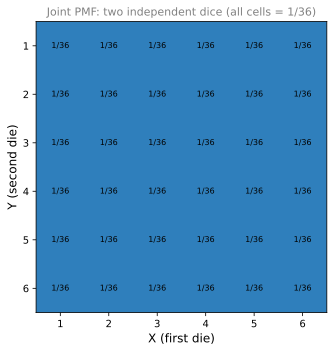
This is the simplest case: when variables are independent, the joint distribution contains no new information beyond what the individual distributions already tell you.
Key Formula for Independence
For independent discrete random variables:
\[ P(X=x, Y=y) = P(X=x) \cdot P(Y=y) \quad \text{for all } x, y \]
If this factorization holds for every pair \((x, y)\), then \(X\) and \(Y\) are independent. If even one cell does not equal the product of the marginals, the variables are dependent.
Joint Distribution of Dependent Variables
First Die and Sum of Both Dice
Now consider a more interesting example. Throw two fair dice again, but define:
- \(X\) = number on the first die (values 1 through 6)
- \(Y\) = sum of both dice (values 2 through 12)
These variables are not independent because knowing \(X\) gives you information about \(Y\). For example, if \(X = 1\), then \(Y\) can only be 2 through 7 (it cannot be 8 or higher).
Here is the complete table of all 36 possible sums (\(X\) = first die across the top, second die down the left):
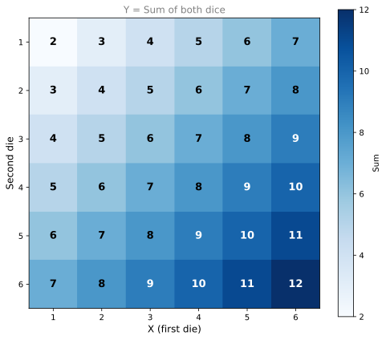
Notice that 7 appears the most (6 times along the diagonal), while 2 and 12 each appear only once. This is why the sum has a triangular PMF.
The PMF of the sum \(Y\) has the familiar triangular shape (7 is the most likely sum):
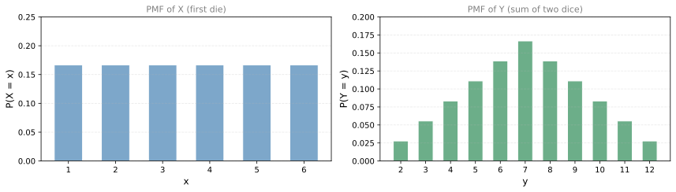
Joint PMF Table
For each valid combination of (first die \(x\), sum \(y\)), there is exactly one outcome out of 36 that produces it. So every valid cell has probability \(\frac{1}{36}\), and impossible cells have probability 0.
A cell \((x, y)\) is valid only if \(y - x\) is between 1 and 6 (i.e., the second die shows a value from 1 to 6). This creates a diagonal stripe pattern:
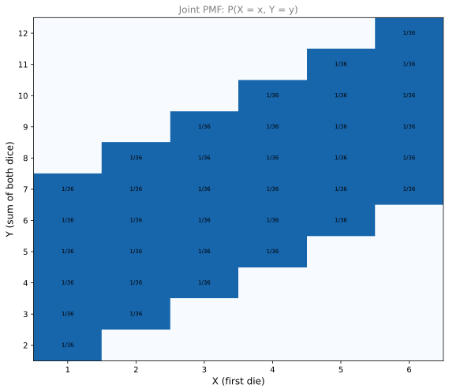
Reading the Dependent Joint PMF
- \(P(X=3, Y=7) = \frac{1}{36}\). If the first die is 3 and the sum is 7, the second die must be 4. That is one specific outcome out of 36.
- \(P(X=1, Y=1) = 0\). If the first die is 1, the smallest possible sum is \(1 + 1 = 2\). A sum of 1 is impossible, so this probability is 0.
Notice the diagonal pattern: for each column (value of \(X\)), there are exactly 6 valid rows (the second die can be 1 through 6, giving sums from \(x+1\) to \(x+6\)).
Independent vs. Dependent: Summary
| Property | Independent (\(X\), \(Y\) = two dice) | Dependent (\(X\) = first die, \(Y\) = sum) |
|---|---|---|
| Joint PMF | \(P(X=x) \cdot P(Y=y)\) everywhere | Does not factor into a product |
| Pattern | Uniform grid (all \(\frac{1}{36}\)) | Diagonal stripe (many zeros) |
| Knowing \(X\) helps predict \(Y\)? | No | Yes |
Review Questions
1. You roll two fair dice. What is \(P(X=4, Y=3)\) where \(X\) is the first die and \(Y\) is the second die?
TipAnswer
\(P(X=4, Y=3) = \frac{1}{6} \cdot \frac{1}{6} = \frac{1}{36}\). Since the dice are independent, the joint probability is the product of the individual probabilities.
1. Why does the joint PMF for two independent dice have \(\frac{1}{36}\) in every cell?
TipAnswer
Because for independent variables, \(P(X=x, Y=y) = P(X=x) \cdot P(Y=y) = \frac{1}{6} \cdot \frac{1}{6} = \frac{1}{36}\) for every combination. No combination is more or less likely than any other.
1. In the sum-of-dice example, why is \(P(X=1, Y=12) = 0\)?
TipAnswer
If the first die shows 1, the maximum sum is \(1 + 6 = 7\). A sum of 12 requires both dice to show 6, so the first die cannot be 1. This combination is impossible.
1. How can you tell from a joint PMF table whether two variables are independent?
TipAnswer
Check whether every cell equals the product of its row marginal and column marginal: \(P(X=x, Y=y) = P(X=x) \cdot P(Y=y)\) for all \((x, y)\). If even one cell fails this test, the variables are dependent. In the sum-of-dice example, the many zero cells (impossible combinations) immediately tell you the variables are not independent.
Joint Distribution (Continuous)
So far, all joint distributions have involved discrete variables. But what happens when \(X\) and \(Y\) are both continuous random variables? The idea is the same, but instead of a probability mass function (a table of probabilities), you get a joint probability density function (a surface in 3D, or a heatmap from above).
Example: Waiting Time and Satisfaction
Consider a customer service call center. For each of 1,000 customers, you record two continuous variables:
- \(X\) = waiting time before the call is picked up (between 0 and 10 minutes)
- \(Y\) = customer satisfaction rating (between 0 and 10)
Both variables are continuous: \(X\) can be 2.4 minutes, 1.53 minutes, etc., and \(Y\) can be 7.8, 3.21, etc.
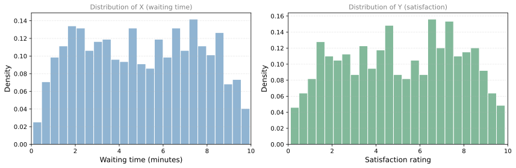
Each histogram individually shows the distribution of one variable. But the real story emerges when you look at both variables together.
Scatter Plot and Heatmap
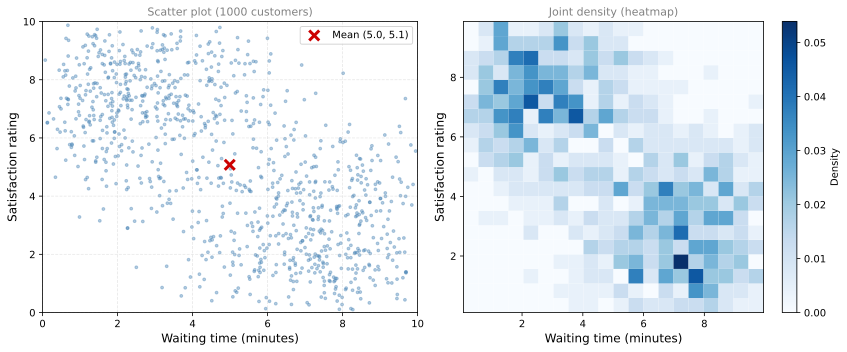
The data concentrates in two corners:
- Bottom-left to top-left corner: Customers with short wait times tend to give high satisfaction ratings.
- Top-right to bottom-right corner: Customers with long wait times tend to give low satisfaction ratings.
This pattern tells you the variables are negatively correlated: as waiting time increases, satisfaction decreases.
Joint Density as a 3D Surface
You can visualize the joint density as a “mountain landscape” seen from above (the heatmap) or in 3D (where height represents density):
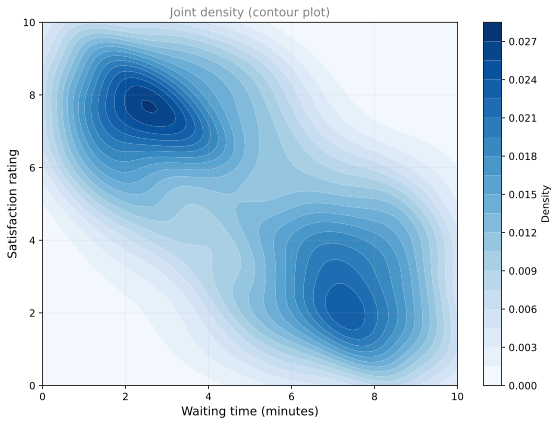
The dark regions (peaks) are where customers are most likely to be found. The two peaks correspond to the two clusters: quick service with high satisfaction, and slow service with low satisfaction.
Mean and Variance of Each Variable
You can still compute the mean and variance of each variable individually by looking at the marginal distributions (the histograms along each axis):
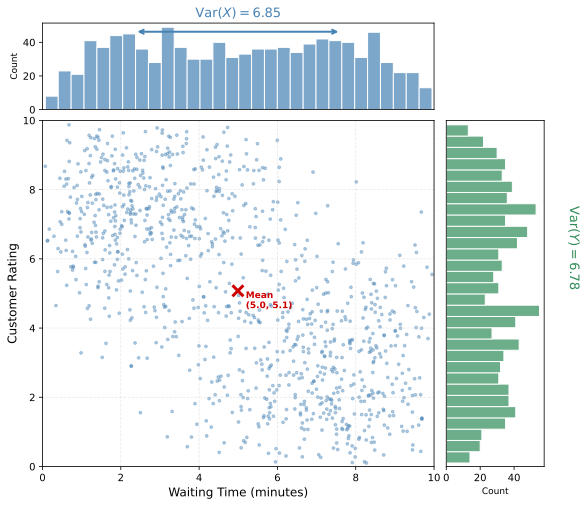
The marginal distributions are obtained by “collapsing” the scatter plot onto each axis. The histogram at the top shows the distribution of waiting time (X), and the histogram on the right shows the distribution of satisfaction (Y).
\(\displaystyle \mathbb{E}[X] = 4.991 \text{ min}, \quad \mathbb{E}[X^2] = 31.765, \quad \text{Var}(X) = 31.765 - 4.991^2 = 6.853\)
\(\displaystyle \mathbb{E}[Y] = 5.077, \quad \mathbb{E}[Y^2] = 32.553, \quad \text{Var}(Y) = 32.553 - 5.077^2 = 6.778\)
These marginal statistics tell you about each variable in isolation. But they do not capture the relationship between \(X\) and \(Y\) (the negative correlation visible in the scatter plot). For that, you will need covariance, which is the topic of the next section.
Review Questions
1. What is the difference between a joint PMF (discrete) and a joint PDF (continuous)?
TipAnswer
A joint PMF gives the probability of each specific pair \((x, y)\) and its values sum to 1. A joint PDF gives the density at each point, and you must integrate over a region to get a probability. The total volume under the PDF surface equals 1.
1. In the waiting time example, why does the data concentrate in two corners of the scatter plot?
TipAnswer
Because waiting time and satisfaction are negatively correlated. Customers who get picked up quickly (low \(X\)) tend to be satisfied (high \(Y\)), and customers who wait a long time (high \(X\)) tend to be dissatisfied (low \(Y\)). The two clusters correspond to these two scenarios.
1. Can the individual histograms of \(X\) and \(Y\) reveal the negative correlation between them?
TipAnswer
No. The individual (marginal) distributions only tell you about each variable separately. You need the joint distribution (scatter plot, heatmap, or joint density) to see how the two variables relate to each other. Two variables can have identical marginal distributions but very different joint behavior.
1. What additional measure (beyond mean and variance of each variable) do you need to describe the relationship between \(X\) and \(Y\)?
TipAnswer
Covariance (or correlation). Mean and variance describe the center and spread of each variable individually, but they say nothing about how the variables move together. Covariance quantifies whether large values of \(X\) tend to occur with large or small values of \(Y\).
1. What is the difference between preparing a joint distribution for discrete versus continuous variables?
- Discrete joint distributions assign probabilities to individual outcomes, while continuous joint distributions assign probabilities to ranges or intervals of values.
- Discrete joint distributions have a countable or finite number of possible outcomes, while continuous joint distributions have an uncountably infinite number of possible outcomes.
- Discrete joint distributions are typically represented by scatter plots, while continuous joint distributions are represented by bar charts.
TipAnswer
a and b. Both a and b are correct. In the discrete case, you can list each pair \((x, y)\) and assign it a specific probability (the PMF). In the continuous case, the probability of any single exact point is zero; instead you assign density values and must integrate over a region to get a probability. This is because continuous variables have uncountably many possible values. Option c is backwards: discrete distributions use bar charts/tables, while continuous distributions use scatter plots, heatmaps, and density surfaces.
2. Suppose that the joint probability distribution of two random variables \(X\) and \(Y\) is given by the following table: \(P(X=1, Y=1) = 0.1\), \(P(X=1, Y=2) = 0.2\), \(P(X=1, Y=3) = 0.3\), \(P(X=2, Y=1) = 0.2\), \(P(X=2, Y=2) = 0.1\), \(P(X=2, Y=3) = 0.1\). What is the probability that \(X\) and \(Y\) both take even values?
- 0.2
- 0.1
- 0.3
- 0.4
TipAnswer
b. The only cell where both \(X\) and \(Y\) are even is \(P(X=2, Y=2) = 0.1\).